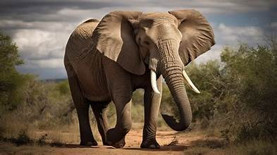

African savannah elephant is the world's largest land mammal. It lives a different habitats, including open savannahs, deserts, and forests. As these ani they play an important role within their ecosystems. They disperse seeds throu dung, helping to fertilise the land; they clear paths through vegetation and ove bush, promoting plant diversity; and they use their tusks and feet to access wa riverbeds, creating small watering holes for other animals. African savannah elephants are found in 23 countries across Africa. They ha populations in Kenya, Botswana, Namibia, Tanzania, South Africa, Zambia, a Zimbabwe. The IUCN classifies the African savannah elephant as endangered. This mean very high risk of extinction in the wild. Their numbers are also decreasing. Tl elephants are poached for their ivory and their natural habitats are being conv agricultural land and infrastructure by expanding human populations. IFAW is working to protect African savannah elephants and conserve their re habitat through our Room to Roam initiative.
